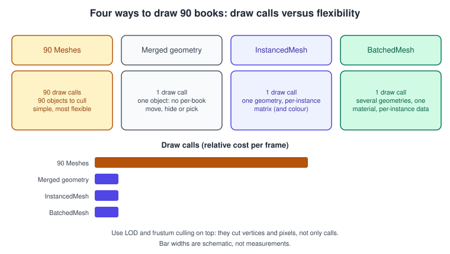
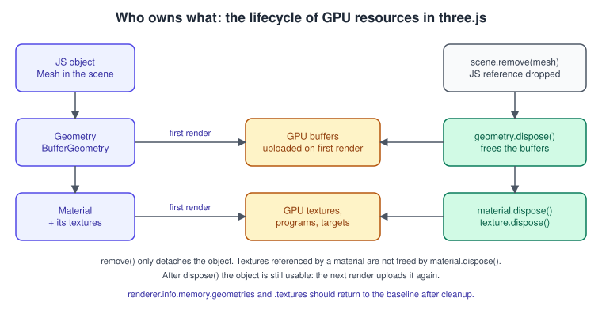
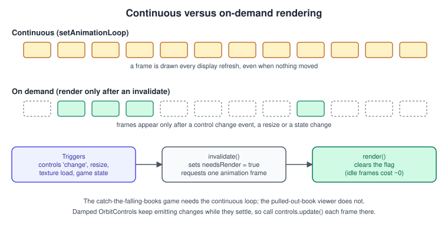

three.js Performance and Disposal
|
This content was generated with the assistance of AI and should be verified against the official documentation before being relied on in production. |
three.js hides the WebGL API, but not its costs. A scene that runs at 60 frames per second with ten objects can stutter with ten thousand, and a single-page application that creates and discards scenes without releasing them slowly runs out of GPU memory until the browser kills the context. This page covers the three levers you control: how much work each frame asks for (draw calls, vertices, pixels), when frames are drawn at all, and how GPU resources are created and released.
The general concepts behind this page are in Performance and Profiling.
The facts were checked in November 2026 against three.js r187 (npm three@0.187.0, published 2026-10-30) and its API documentation. The
advice applies to WebGLRenderer and, where noted, to WebGPURenderer
(WebGPURenderer and TSL). Everything runs in current evergreen browsers
with WebGL 2. The general, API-independent profiling workflow (CPU/GPU timelines, timer queries, Spector.js) is on
WebGL Performance and Debugging; this page is its three.js counterpart.
In the Bookshelf three.js track this is the clean-up step: the click-to-pull-out interaction and the "catch the falling books" game create and destroy objects constantly, so the page shows how to pool them, count what is on the GPU, and stop drawing when nothing moves. The shelf and books come from bookshelf.glb. For the browser’s own animation loop and visibility handling see Browser Animations.
Where the time goes
A frame has a CPU part and a GPU part. On the CPU, three.js walks the scene graph, culls objects against the camera frustum, sorts the transparent ones, updates matrices and issues one draw call per visible mesh and material group. On the GPU, the vertex stage runs per vertex and the fragment stage runs per pixel. The usual order of bottlenecks in a three.js application is:
-
Draw calls and state changes (CPU): thousands of small meshes, each with its own material.
-
Fragment work (GPU): high pixel ratios on phones, large shadow maps, transparent overdraw, post-processing at full resolution.
-
Memory (GPU and JS heap): uncompressed textures, geometries never released.
-
Garbage (JS): allocating vectors and matrices inside the animation loop makes the garbage collector pause the frame.

Counting before optimising: renderer.info
renderer.info holds the statistics of the last frame and the resources that live on the GPU. Measure first, then change one thing.
| Property | Meaning |
|---|---|
|
Draw calls in the last frame |
|
Primitives drawn in the last frame |
|
The frame counter |
|
Geometries currently uploaded |
|
Textures currently uploaded |
|
|
Source: three.js docs: WebGLRenderer
With post-processing there are several render() calls per frame, so the counters would show only the last pass. Switch off autoReset
and reset once per frame yourself:
import * as THREE from 'three';
const renderer = new THREE.WebGLRenderer( { antialias: true } );
renderer.info.autoReset = false; // we reset once per frame
function frame( timestamp ) {
timer.update( timestamp );
// ... update the scene ...
renderer.render( scene, camera );
// If several passes ran, read the totals here, then reset:
hud.textContent =
`calls ${ renderer.info.render.calls } ` +
`triangles ${ renderer.info.render.triangles } ` +
`geometries ${ renderer.info.memory.geometries } ` +
`textures ${ renderer.info.memory.textures }`;
renderer.info.reset();
}
renderer.setAnimationLoop( frame );The memory counters are the leak detector: load a model, remove it, call the cleanup below and the numbers must return to the starting
values. If they keep growing every time a level is shown, something is not being released. WebGPURenderer has the same info object.
Releasing GPU resources with dispose()

Creating a BufferGeometry, Texture or material only allocates JavaScript objects. The GPU resources (buffers, texture storage, compiled
programs) are created lazily the first time the object is rendered. Removing the object from the scene and dropping the last JavaScript
reference lets the JavaScript side be garbage collected, but the renderer keeps the GPU side until you tell it otherwise. That is what
dispose() does: it frees the GPU resources of that one object.
| Object | What to know |
|---|---|
|
Frees the vertex and index buffers. Call it when the geometry is no longer used |
|
Frees the compiled program (shared programs are reference counted). It does not free the textures the material refers to |
|
Frees the texture storage. Textures inside a material ( |
|
Frees the framebuffer and its textures; important for shadow maps, reflections and post-processing buffers you replace |
|
Frees the instance data; the shared geometry and material are separate objects and need their own call |
|
Frees everything the renderer allocated; call it when the whole canvas goes away |
Controls ( |
Removes the DOM listeners, which otherwise keep the old camera and canvas alive |
Two rules of thumb follow. First, dispose() does not make the object unusable: if you render it again the renderer uploads it again, so a
disposed-but-still-referenced geometry silently comes back to life (and the counter rises again). Second, dispose only what nobody else
needs. A geometry shared by ten books must not be disposed because one book is deleted. Since r187 WebGPURenderer and WebGLRenderer use
WeakRef and FinalizationRegistry internally, which helps the renderer forget objects that were garbage collected, but it is not a replacement for
calling dispose() at the moment you know the resource is finished.
A cleanup helper for a loaded glTF scene or a whole level:
// dispose-utils.js
import * as THREE from 'three';
const TEXTURE_SLOTS_SKIP = new Set( [ 'userData' ] );
/** Disposes every texture referenced by a material, then the material itself. */
export function disposeMaterial( material, disposed ) {
if ( disposed.has( material ) ) return;
disposed.add( material );
for ( const [ key, value ] of Object.entries( material ) ) {
if ( TEXTURE_SLOTS_SKIP.has( key ) ) continue;
if ( value && value.isTexture && ! disposed.has( value ) ) {
disposed.add( value );
value.dispose();
}
}
material.dispose();
}
/**
* Releases the GPU resources of an object tree. Pass the same `disposed` set when cleaning
* several roots that share geometries or materials so nothing is disposed twice.
* Do not call it on assets that are still used by another part of the application.
*/
export function disposeObject( root, disposed = new Set() ) {
root.traverse( ( object ) => {
if ( object.geometry && ! disposed.has( object.geometry ) ) {
disposed.add( object.geometry );
object.geometry.dispose();
}
if ( object.material ) {
const materials = Array.isArray( object.material ) ? object.material : [ object.material ];
for ( const material of materials ) disposeMaterial( material, disposed );
}
if ( object.isInstancedMesh || object.isBatchedMesh ) object.dispose();
} );
root.removeFromParent();
return disposed;
}
/** Example: leave the "Bookshelf" level. */
export function leaveLevel( renderer, level, controls ) {
disposeObject( level );
controls.dispose();
console.log( 'geometries', renderer.info.memory.geometries, 'textures', renderer.info.memory.textures );
}Textures loaded through a loader that caches by URL (THREE.Cache.enabled = true) come back as the same object, which is another reason to
keep a disposed set rather than disposing blindly. For one-shot loads from GLTFLoader the typical pattern is to keep the returned
gltf.scene and clean it with disposeObject when the level ends.
Reducing draw calls
Each mesh with one material costs about one draw call (a mesh with a material array costs one per group). Three techniques turn many objects into few calls; the right choice depends on what must stay independent.
| Technique | Draw calls | Independent per item | Use for |
|---|---|---|---|
Many |
one each |
everything (material, visibility, raycast) |
tens to a few hundred objects |
|
one for the merged group |
nothing (it is one geometry) |
static scenery that never changes, such as the shelf boards |
|
one |
transform and colour per instance |
many copies of one geometry: the books, the dust |
|
one |
transform and visibility per instance, several geometries with one material |
a mix of different shapes sharing a material |
InstancedMesh for the shelf of books
import * as THREE from 'three';
const ROWS = 6;
const PER_ROW = 15;
const COUNT = ROWS * PER_ROW;
const bookGeometry = new THREE.BoxGeometry( 0.06, 0.28, 0.2 );
const bookMaterial = new THREE.MeshStandardMaterial( { roughness: 0.7 } );
const books = new THREE.InstancedMesh( bookGeometry, bookMaterial, COUNT );
books.instanceMatrix.setUsage( THREE.DynamicDrawUsage ); // we will update some matrices later
const matrix = new THREE.Matrix4();
const color = new THREE.Color();
for ( let row = 0; row < ROWS; row ++ ) {
for ( let i = 0; i < PER_ROW; i ++ ) {
const index = row * PER_ROW + i;
matrix.setPosition( -0.5 + i * 0.07, 0.2 + row * 0.35, 0 );
books.setMatrixAt( index, matrix );
books.setColorAt( index, color.setHSL( Math.random(), 0.5, 0.45 ) );
}
}
books.instanceMatrix.needsUpdate = true; // upload once, after all matrices are written
books.instanceColor.needsUpdate = true;
books.computeBoundingSphere(); // frustum culling and raycasting use this bound
scene.add( books );
// When the level ends:
// books.dispose(); bookGeometry.dispose(); bookMaterial.dispose();Source: three.js docs: InstancedMesh
Pitfalls: set needsUpdate once after all the writes, not after every setMatrixAt; recompute the bounding sphere after moving instances
far from where they were, because the whole instanced mesh is culled as a unit; and remember that picking a book now returns the
instanceId on the intersection, not a separate object, which is covered in
Interaction, Picking and Controls. The geometry background is on
three.js Geometry.
BatchedMesh for different shapes
import * as THREE from 'three';
const material = new THREE.MeshStandardMaterial( { color: 0x8b5a2b } );
// maxInstanceCount, maxVertexCount, maxIndexCount, material
const batched = new THREE.BatchedMesh( 200, 20000, 40000, material );
const slim = batched.addGeometry( new THREE.BoxGeometry( 0.04, 0.28, 0.2 ) );
const thick = batched.addGeometry( new THREE.BoxGeometry( 0.09, 0.3, 0.22 ) );
const matrix = new THREE.Matrix4();
for ( let i = 0; i < 60; i ++ ) {
const id = batched.addInstance( i % 3 === 0 ? thick : slim );
matrix.setPosition( ( i % 20 ) * 0.1, Math.floor( i / 20 ) * 0.35, 0 );
batched.setMatrixAt( id, matrix );
}
batched.setVisibleAt( 7, false ); // hide one instance without removing it
scene.add( batched );Source: three.js docs: BatchedMesh
The three capacity numbers are hard limits fixed at creation: the maximum number of instances and the total vertices and indices of all
the unique geometries. Later geometries must use the same attributes (same itemSize and normalized) and the same indexed or non-indexed
layout as the first. perObjectFrustumCulled (default true) culls instances individually and sortObjects (default true)
sorts them to reduce overdraw; negatively scaled matrices are not supported.
Merging static geometry
import { mergeGeometries } from 'three/addons/utils/BufferGeometryUtils.js';
// Six shelf boards become one geometry and one draw call.
const merged = mergeGeometries( boardGeometries, false );
const shelf = new THREE.Mesh( merged, woodMaterial );
scene.add( shelf );
for ( const g of boardGeometries ) g.dispose(); // the source geometries were never rendered, but free them anywayAll input geometries must have the same set of attributes. Pass true as the second argument to keep one geometry group per input if each
board needs its own material. Merged geometry cannot be moved piece by piece: the whole shelf moves as one.
Level of detail
Distant objects do not need their triangles. LOD shows one of several objects depending on the distance to the camera, and the renderer
updates it each frame.
import * as THREE from 'three';
const lod = new THREE.LOD();
// Three levels of one detailed prop: close, middle and far.
const levels = [ 3, 1, 0 ];
levels.forEach( ( detail, i ) => {
const mesh = new THREE.Mesh( new THREE.IcosahedronGeometry( 0.4, detail ), lampMaterial );
// addLevel( object, distance, hysteresis )
lod.addLevel( mesh, i * 6, 0.1 );
} );
scene.add( lod );
// With autoUpdate true (the default) the renderer updates the LOD each frame.
// If you set lod.autoUpdate = false, call lod.update( camera ) in your loop.Source: three.js docs: LOD
The hysteresis is a fraction of the distance and stops a level flickering back and forth at a boundary. LOD saves vertex and fragment work for far objects but not draw calls: every level is still a mesh. For books a single flat quad "billboard" of the cover as the farthest level is usually enough. Models for the levels come from Loading Models with glTF.
Rendering only when needed

A viewer that shows a static shelf the user inspects now and then does not need 60 frames per second of identical images. Drawing only after
something changes saves battery and fan noise. The pattern is a dirty flag: anything that changes the picture calls invalidate(), which
requests one animation frame; the frame draws and clears the flag.
import * as THREE from 'three';
import { OrbitControls } from 'three/addons/controls/OrbitControls.js';
const renderer = new THREE.WebGLRenderer( { antialias: true } );
renderer.setPixelRatio( Math.min( window.devicePixelRatio, 2 ) );
document.body.appendChild( renderer.domElement );
const controls = new OrbitControls( camera, renderer.domElement );
controls.enableDamping = true;
let needsRender = true;
let rafId = 0;
function invalidate() {
needsRender = true;
if ( rafId === 0 ) rafId = requestAnimationFrame( frame );
}
function frame() {
rafId = 0;
// With damping the controls keep moving after the pointer stops: update() returns true while they change.
if ( controls.update() ) needsRender = true;
if ( ! needsRender ) return;
needsRender = false;
renderer.render( scene, camera );
if ( controls.enableDamping ) invalidate(); // keep going until damping settles
}
controls.addEventListener( 'change', invalidate );
window.addEventListener( 'resize', () => {
camera.aspect = window.innerWidth / window.innerHeight;
camera.updateProjectionMatrix();
renderer.setSize( window.innerWidth, window.innerHeight );
invalidate();
} );
// Anything else that changes the picture also calls invalidate(), for example a texture finishing to load:
new THREE.TextureLoader().load( '/bookshelf-cover.png', ( texture ) => {
coverMaterial.map = texture;
coverMaterial.needsUpdate = true;
invalidate();
} );
invalidate();The game mode of the Bookshelf (falling books, a running timer) needs the continuous loop, so a real application switches
between the two: renderer.setAnimationLoop( null ) stops the loop and the viewer falls back to invalidate(). Remember that the
WebGPURenderer must be initialised before an on-demand render() call (await renderer.init()), whereas inside setAnimationLoop it is
automatic. A hidden tab already pauses requestAnimationFrame; Timer.connect( document ) uses the Page Visibility API so that
the first delta after returning is not huge.
Compiling shaders before the first frame
Materials compile their program the first time an object that uses them is rendered. For a new model that is visible at once, the stall
is a visible hitch. compileAsync() compiles the materials of a scene for a given camera without blocking, using the
KHR_parallel_shader_compile extension where the browser supports it. Set up lights and the environment first, because the program depends on
them.
const gltf = await new GLTFLoader().loadAsync( '/bookshelf.glb' );
scene.add( gltf.scene );
await renderer.compileAsync( scene, camera ); // resolves when the scene can render without compile stalls
renderer.setAnimationLoop( () => renderer.render( scene, camera ) );On WebGPURenderer the same method also prepares the active pipeline’s geometry and compute resources; its optional third argument
targetScene is needed when you pass a single object that you are about to add to an existing scene.
Pixels: pixel ratio, shadows and transparency
-
Pixel ratio. A phone with a device pixel ratio of 3 renders nine times the pixels of a ratio of 1. Cap it:
renderer.setPixelRatio( Math.min( window.devicePixelRatio, 2 ) ). A dynamic scheme lowers the ratio when the frame time exceeds the budget and raises it when there is headroom. -
Shadow maps. Each shadow-casting light renders the scene again from its point of view. Use few casters, 1024 or 2048 pixel maps, tight shadow camera bounds (see Lights and Shadows) and update static shadows only once with
renderer.shadowMap.autoUpdate = falseandrenderer.shadowMap.needsUpdate = true.PCFSoftShadowMapis deprecated since r182 onWebGLRenderer; usePCFShadowMap. -
Transparency. Transparent meshes are sorted back to front and every layer is blended; large transparent quads (the dust sprites close to the camera) are expensive because many pixels are shaded several times.
-
Antialiasing. MSAA is cheap on desktop GPUs and costly on mobile; offer it as a setting.
-
Post-processing. Each full-screen pass costs one fragment shader per pixel. Render bloom at half resolution when you can.
Allocation: pooling the falling books
The "catch the falling books" game spawns a book every few hundred milliseconds. Creating a Mesh, geometry and material per spawn
and disposing them when the book is caught or missed produces garbage and repeated GPU uploads. The fix is to build a fixed pool of
objects that share one geometry and one material and recycle them.
// book-pool.js
import * as THREE from 'three';
export class BookPool {
constructor( scene, geometry, material, size = 24 ) {
this.free = [];
this.active = new Set();
for ( let i = 0; i < size; i ++ ) {
const book = new THREE.Mesh( geometry, material ); // one shared geometry and material
book.visible = false;
book.userData.velocity = new THREE.Vector3();
scene.add( book );
this.free.push( book );
}
}
spawn( x ) {
const book = this.free.pop();
if ( ! book ) return null; // pool exhausted: skip the spawn
book.position.set( x, 4, 0 );
book.rotation.set( 0, 0, 0 );
book.userData.velocity.set( 0, 0, 0 );
book.visible = true;
this.active.add( book );
return book;
}
release( book ) {
book.visible = false;
this.active.delete( book );
this.free.push( book );
}
update( delta ) {
for ( const book of this.active ) {
book.userData.velocity.y -= 9.8 * delta;
book.position.addScaledVector( book.userData.velocity, delta );
if ( book.position.y < -1 ) this.release( book ); // missed
}
}
}Source: three.js manual: Fundamentals
Deleting from a Set while iterating it is safe in JavaScript. Also avoid new THREE.Vector3() inside update(): reuse scratch vectors
declared outside the loop so the garbage collector has nothing to do per frame. Hidden objects are skipped by the renderer, so a pool of 24
books costs nothing while they are invisible.
Checklist
-
Measure with
renderer.infoand the browser performance panel before and after each change. -
Keep draw calls in the low hundreds: merge static geometry, instance repeated objects, batch objects that share a material.
-
Cap the pixel ratio and use the smallest shadow maps that look fine.
-
Pool objects that appear and disappear often.
-
Dispose geometries, materials, textures and render targets you created and no longer use; dispose controls and the renderer when the view goes away.
-
Compile materials with
compileAsync()before showing a new model. -
Render on demand when the scene is static.
-
Compress textures (KTX2) and meshes (Draco or Meshopt) at load time; see Textures and Colour Management.
Where the books are outdated
| Book and chapter | What it says | Today |
|---|---|---|
LTJ ch. 5, 6; TCB ch. 2 |
Merge geometries with |
|
LTJ ch. 1; TCB ch. 1 |
Watch frames per second with a Stats panel and little else |
Use |
PAR ch. 3, 6 |
Create objects freely and let the scene run continuously |
Pool frequently created objects, dispose what you release and consider on-demand rendering |
LTJ ch. 4, TCB ch. 4 |
|
Material arrays with geometry groups cost one draw call per group; prefer fewer materials and texture atlases |
The books were written for r49 to r69, long before InstancedMesh, BatchedMesh, compileAsync and the Timer existed. For the removed
classes and their replacements see the three.js Migration Guide.
See it in
Sibling pages: Scene Graph and Transforms (matrices and why large
static subtrees can disable automatic updates), Animation System (mixers
also need cleanup with mixer.uncacheRoot() and stopAllAction()), and
Context Loss and Robustness (what happens to all these resources when the browser
loses the context).
References
-
three.js documentation: WebGLRenderer, InstancedMesh, BatchedMesh, LOD, Timer, BufferGeometry, OrbitControls
-
three.js manual: https://threejs.org/manual/
-
three.js releases and Migration Guide: https://github.com/mrdoob/three.js/releases, https://github.com/mrdoob/three.js/wiki/Migration-Guide
-
WebGL extension KHR_parallel_shader_compile: https://registry.khronos.org/webgl/extensions/KHR_parallel_shader_compile/
-
MDN, WebGL best practices: https://developer.mozilla.org/en-US/docs/Web/API/WebGL_API/WebGL_best_practices
-
Tony Parisi, WebGL: Up and Running (O’Reilly, 2012): https://www.oreilly.com/library/view/webgl-up-and/9781449326487/
-
Jos Dirksen, Learning Three.js, 2nd edition (Packt, 2015): https://www.packtpub.com/en-us/product/learning-threejs-the-javascript-3d-library-for-webgl-second-edition-9781784392215
-
Jos Dirksen, Three.js Cookbook (Packt, 2015): https://www.packtpub.com/product/threejs-cookbook/9781783981182